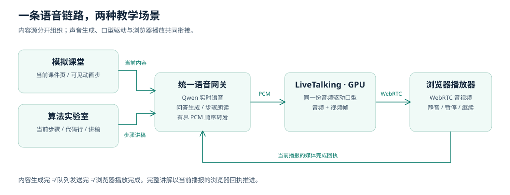

DEMO 01
进入与开讲
正在加载录屏
点击播放，观看功能演示
从专题目录进入题目，开启数字人助教。
从专题目录选择题目，点击完整讲解，数字人随即进入当前算法的教学场景。
- 按算法专题组织题目，快速找到学习内容。
- 完整讲解把当前步骤串联为连续的学习过程。
把交互图示、同步代码和数字人放在同一个学习场景里。围绕当前执行步骤讲解，遇到不理解的代码随时追问。
五段真实操作录屏，依次展示开启讲解、步骤同步、暂停续播、代码追问，以及音色与语气设置。点击标签选择观看。
正在加载录屏
点击播放，观看功能演示
从专题目录选择题目，点击完整讲解，数字人随即进入当前算法的教学场景。
正在加载录屏
点击播放，观看功能演示
推进算法步骤时，交互图示与代码高亮同步更新，数字人围绕当前状态讲解。
正在加载录屏
点击播放，观看功能演示
暂停时保留当前讲解进度，继续后接着学习，完整讲解仍会推进后续步骤。
正在加载录屏
点击播放，观看功能演示
结合当前代码和高亮行提出问题，让数字人解释关键操作背后的原因。
正在加载录屏
点击播放，观看功能演示
选择适合自己的教师音色与讲解语气，课堂和算法实验室共用设置。
课堂围绕当前课件页和可见动画步，算法实验室围绕当前执行步骤。内容来源不同，共用语音生成、PCM 转发和数字人音视频输出。

步骤状态提供图示、代码行和讲稿。比较、交换、更新边界等操作都落在具体步骤上，让讲解对应每一次具体的状态变化。
步骤讲稿交给 Qwen 朗读，代码问答使用同一实时语音连接；同一份 PCM 音频进入 LiveTalking，同时驱动声音与口型。
完整讲解等待浏览器的媒体完成回执再推进。暂停保留当前未播音频；停止或切换内容则废弃旧播报。

| 层次 | 采用的技术 | 项目负责的部分 |
|---|---|---|
| 内容与教学 | 专题演示状态、题目模板、实时模型 | 把步骤、图示、代码行和问题上下文组织在一起 |
| 声音与形象 | Qwen 实时语音、LiveTalking / Wav2Lip、WebRTC | 课堂与算法统一接入、选择音色与语气、缓冲与取消控制 |
| 交互与播放 | 同源嵌入、PCM 顺序队列、RTP 媒体进度 | 暂停续播、过期播报丢弃、按浏览器回执推进步骤 |
交互演示呈现预设教学算法的执行过程，可修改输入并观察状态变化。学生代码的运行与提交评测在题目页完成。